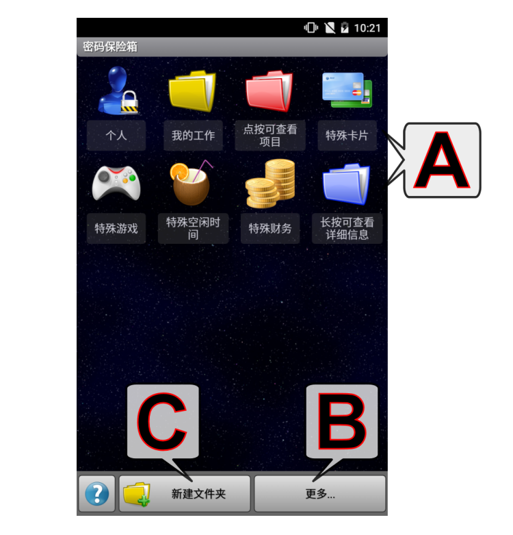
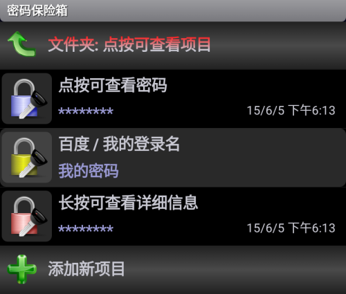
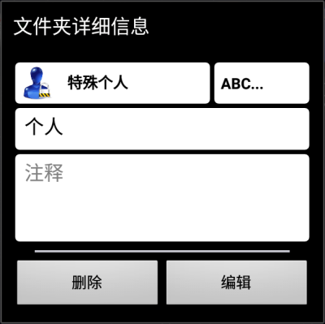

密码保险箱
（轻触某个字母或向下滚动，即可查看更多主题）

A - 密码文件夹
- 点按文件夹：打开密码项目列表：

- 点按项目：显示/隐藏 密码
- 长按项目：显示/编辑 参数（标题、密码、注释和颜色）；删除/移动 项目
- 图标的含义：
 - 复制到剪贴板
- 复制到剪贴板
 - 复制到剪贴板（所有/选中段落 - 段落指以“硬回车”分隔的文字行）
- 复制到剪贴板（所有/选中段落 - 段落指以“硬回车”分隔的文字行）
 - 密码生成器
- 密码生成器
- 长按文件夹：显示/编辑/删除 文件夹参数（名称、注释和颜色）；

- 执行位置（右上角）：(ABC...) 这意味着按字母顺序排位（默认）。如您在此处选择了一个数字，则表示被编辑的这个文件夹将处于该数字指示的绝对位置。（注：如果您通过数字值指定的位置目前已被其他文件夹指定，则原来的文件夹将被当前编辑的文件夹替代，而原来那个文件夹的位置设定值将被自动设为默认值（按字母顺序排位）。）
B - 更多选项按钮
注：按下右下角的“菜单按钮”或“展开按钮”可显示底部菜单。
- 更改密码：更改密码保险箱的“主”密码。
- 导入保险箱：从应用的数据导入/导出目录将以前导出的密码保险箱数据重新导入。
- 合并保管库：合并保管库。
- 导出保险箱：将当前密码保险箱数据导出（备份）到应用的数据导入/导出目录。
- 注意：
- 应用的 导入/导出目录 可以在应用的设置中设定
- 有两种导入导出格式可供选择：（1）使用经压缩、完全加密的 .pwv 文件格式，或（2）未加密、可编辑的 .xml 文件格式。
C - 新建文件夹
注意：按下右下角的“菜单按钮”或“展开按钮”可显示底部菜单。
- 使用显示/编辑/删除功能中同样的对话框新建一个密码文件夹。
其他...
- 整个保险箱作为一个对象被加密。只要您的密码足够安全，存储的所有属性（名称、密码、注释等）也同样安全。
- 忘记密码
- 如果您忘记了密码，将无法进入您的密码保险箱。
- 您现在能做的是在“登录（输入密码）”对话框中单击“取消”按钮，然后根据“帮我登录！”功能的指导操作。